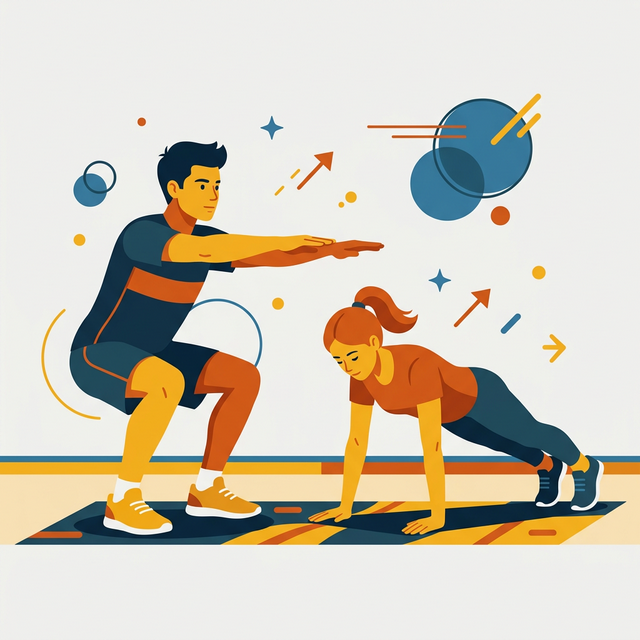

Flexiones, Abdominales y Sentadillas

Lección 4 | 1ro. Básico
Aprenderemos a realizar los ejercicios fundamentales para fortalecer nuestro cuerpo de manera segura y eficiente.
Objetivos de Aprendizaje
🎯 1. Identificar la técnica correcta para flexiones, abdominales y sentadillas.
🎯 2. Reconocer los grupos musculares que trabaja cada ejercicio.
🎯 3. Practicar con consciencia sobre la seguridad y la postura.
¿Alguna vez has entrenado?
¿Qué ejercicio te parece más difícil de realizar correctamente?
¡Hoy aprenderás el secreto de cada uno!
Diccionario Deportivo
Resistencia
Capacidad de mantener un esfuerzo durante tiempo prolongado.
Postura
Posición del cuerpo que evita lesiones y maximiza el esfuerzo.
Repetición
Cada ejecución individual de un ejercicio completo.
La Sentadilla Perfecta
La sentadilla es el ejercicio rey para las piernas. Trabaja los cuádriceps, glúteos y core.
💡 Regla de oro: Tus rodillas nunca deben sobrepasar excesivamente la punta de tus pies y tu espalda debe estar recta.
Flexiones de Brazos
Fortalecen el pecho (pectorales), hombros y tríceps. Es fundamental mantener el cuerpo alineado como una tabla.
🔥 Si te cuesta mucho al principio, puedes apoyar las rodillas en el suelo para ganar fuerza gradualmente.
Zonas de Trabajo
Toca los puntos para ver qué ejercicio activa cada zona muscular.
¿Cuál es el error?
Al hacer abdominales, ¿qué acción puede causar una lesión?
El Reto de la Sentadilla
¿Podrás ordenar los pasos para una sentadilla perfecta? Haz clic en cada uno en el orden correcto.
Rutina en Casa
Si tienes poco tiempo y quieres fortalecer todo el cuerpo, ¿qué combinación es mejor?
¿Qué aprendiste hoy?
"Hoy aprendí que no basta con moverme rápido, sino que la **técnica** es lo que me ayuda a mejorar sin lastimarme."
¿Cuál de estos ejercicios practicarás hoy mismo?
¡Reto Completado!

¡Excelente Trabajo!
Has dominado los conceptos básicos de los ejercicios de fuerza. ¡Recuerda siempre la seguridad primero!